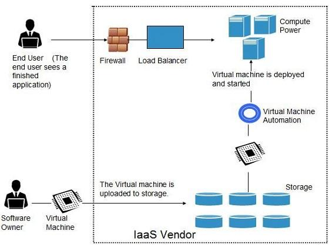
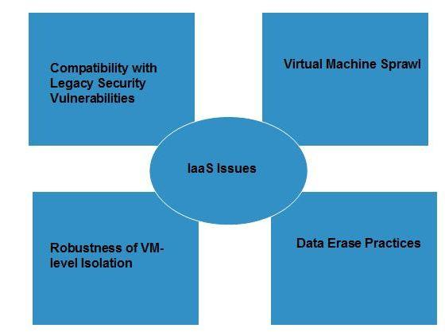

IAAS (Infrastructure as a Service)Link
IntroductionLink
- Infrastructure as a Service (IaaS) is one of the “Everything as a Service” trends.
- IaaS is easier to understand if we refer it as Hardware as a Service (i.e. instead of constructing our own server farms, a small firm could consider paying to use infrastructure provided by professional enterprises).
- Companies such as Google, Microsoft and IBM are involved in offering such services.
- Large-scale computer hardware and high computer network connectivity are essential components of an effective IaaS.
- The IaaS is categorized into:
- Computation as a Service (CaaS), in which virtual machine based servers are rented and charged per hour based on the virtual machine capacity – mainly CPU and RAM size, features of the virtual machine, OS and deployed software; and
-
Data as a Service (DaaS), in which unlimited storage space is used to store the user’s data regardless of its type, charged per GByte for data size and data transfer. In this section we will describe some popular IaaS systems such as Amazon EC2 (2010), GoGrid(2010),AmazonS3(2010)andRackspace (2010).Wethencompare three widely used CaaS systems.
-
A category of cloud services which provides capability to provision processing, storage, intra-cloud network connectivity services, and other fundamental computing resources of the cloud infrastructure.
- Cloud infrastructure services, known as Infrastructure as a Service (IaaS), are self-service models for accessing, monitoring, and managing remote data-center infrastructures, such as compute (virtualization or bare metal), storage, networking, and networking services (e.g. firewalls). Instead of having to purchase hardware outright, users can purchase IaaS based on consumption, similar to electricity or other utility billing.
- Compared to SaaS, IaaS users are responsible for managing applications, data, runtime, middleware, and OSes. Providers still manage virtualization, servers, hard drives, storage, and networking.
-
Many IaaS providers now offer databases, messaging queues, and other services above the virtualization layer as well. Some tech analysts draw a distinction here and use the IaaS+ moniker for these other options. What users gain with IaaS is infrastructure on top of which they can install any required platform. Users are responsible for updating these if new versions are released.
-
IAAS is the base layer and typically provide access to networking, virtual machines, storage.
- The client has the highest level of flexibility and management over resources compared to PAAS and SAAS.
- Infrastructure as a Service, sometimes abbreviated as IaaS, contains the basic building blocks for cloud IT and typically provide access to networking features, computers (virtual or on dedicated hardware), and data storage space.
- Infrastructure as a Service provides you with the highest level of flexibility and management control over your IT resources and is most similar to existing IT resources that many IT departments and developers are familiar with today.
-
IaaS provides access to fundamental resources such as physical machines, virtual machines, virtual storage, etc., Apart from these resources, the IaaS also offers:
-
Virtual machine disk storage
- Virtual local area network (VLANs)
- Load balancers
- IP addresses
- Software bundles
All of the above resources are made available to end user via server virtualization. Moreover, these resources are accessed by the customers as if they own them.

BenefitsLink
IaaS allows the cloud provider to freely locate the infrastructure over the Internet in a cost-effective manner. Some of the key benefits of IaaS are listed below:
- Full Control of the computing resources through Administrative Access to VMs.
- Flexible and Efficient renting of Computer Hardware.
-
Portability, Interoperability with Legacy Applications.
-
Full Control Over Computing Resources Through Administrative Access to VMs IaaS allows the consumer to access computing resources through administrative access to virtual machines in the following manner:
-
Consumer issues administrative command to cloud provider to run the virtual machine or to save data on cloud's server.
-
Consumer issues administrative command to virtual machines they owned to start web server or installing new applications.
-
Flexible and Efficient Renting of Computer Hardware
-
IaaS resources such as virtual machines, storages, bandwidth, IP addresses, monitoring services, firewalls, etc.,
-
all are made available to the consumers on rent. The consumer has to pay based the length of time a consumer retains a resource. Also with administrative access to virtual machines, the consumer can also run any software, even a custom operating system.
-
Portability, Interoperability, Interoperability with legacy Applications
It is possible to maintain legacy between applications and workloads between IaaS clouds. For example, network applications such as web server, e-mail server that normally runs on consumer-owned server hardware can also be run from VMs in IaaS cloud.
-
Other Benefits
-
Scalability; resource is available as and when you it, therefore there are no delays in expanding capacity or any wastage of unused capability
- No hardware CAPEX; the underlying physical hardware supporting IaaS is set up and maintained by a cloud provider, saving you time and cost
- Utility style costing; the service can be accessed on demand and you only pay for the resource that you actually use
-
Location independence; the service can be accessed from anywhere using the Internet, so long as the security protocol of the cloud lets it
-
Physical security of data center location; services available through a public cloud, or private clouds hosted externally with the cloud provider
- No single point of failure; the multitude of hardware resources means that should one aspect of the service fail the service will be unaffected
- On demand computing resources - Eliminate the need of far ahead planning
- No up-front commitment
- Start small and grow as required
- No contract, Only credit card!
- Pay for what you use
- No maintenance
- Measured service
- Reliability
IssuesLink
IaaS shares issues with PaaS and SaaS, such as Network dependence and browser based risks. It also have some specific issues associated with it. These issues are mentioned in the following diagram:

- Compatibility with legacy security vulnerabilities: Because IaaS offers the consumer to run legacy software in provider's infrastructure, therefore it exposes consumers to all of the security vulnerabilities of such legacy software.
- Virtual machine sprawl: The VM can become out of date with respect to security updates because IaaS allows the consumer to operate the virtual machines in running, suspended and off state. However, the provider can automatically update such VMs, but this mechanism is hard and complex.
- Robustness of VM Level isolation: IaaS offers an isolated environment to individual consumers through hypervisor. Hypervisor is a software layer that includes hardware support for virtualization to split a physical computer into multiple virtual machines.
- Data erase practices: The consumer uses virtual machines that in turn uses the common disk resources provided by the cloud provider. When the consumer releases the resource, the cloud provider must ensure that next consumer to rent the resource does not observe data residue from previous consumer.
CharacteristicsLink
Here are the characteristics of IaaS service model:
- Virtual machines with pre-installed software.
- Virtual machines with pre-installed Operating Systems such as Windows, Linux, and Solaris.
- On-demand availability of resources.
- Allows to store copies of particular data in different locations.
- The computing resources can be easily scaled up and down.
IaaS Examples: Amazon Web Services (AWS), Cisco Metapod, Microsoft Azure, Google Compute Engine (GCE), Joyent Common IaaS Use-Case: Extends current data center infrastructure for temporary workloads (e.g. increased Christmas holiday site traffic) Technology Analyst Examples: Kyle Hilgendorf (Gartner), Drue Reeves (Gartner), Lydia Leong (Gartner), Doug Toombs (Gartner), Gregor Petri (Gartner EU), Tiny Haynes (Gartner EU), Jeffery Hammond (Forrester), James Staten (Forrester)